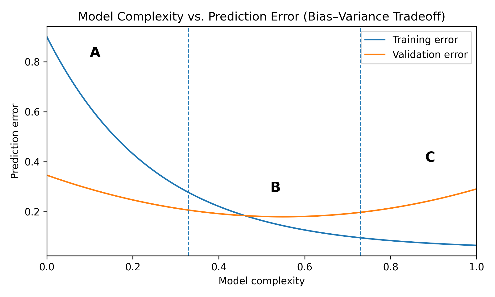

Exercises
Question 1:
When is MAE preferred over MSE?
When large errors should be heavily penalized
When robustness to outliers is desired
When errors should be squared
When the model must maximize variance explained
Answer: The correct answer is B).
Solution:
MAE does not square the error, making it less sensitive to large deviations. It is preferred when robustness to outliers is important.
Question 2:
Why is RMSE often preferred over MSE for interpretation?
It penalizes errors more strongly
It has the same units as the target variable
It is always smaller than MSE
It eliminates outliers
Answer: The correct answer is B).
Solution:
RMSE is the square root of MSE, so it has the same units as the target variable, making it easier to interpret in practice.
Question 3:
What does a negative \(R^2\) value indicate?
Perfect predictions
Better than predicting the mean
Worse than predicting the mean
The model has zero variance
Answer: The correct answer is C).
Solution:
\[R^2 = 1 - \frac{SS_{res}}{SS_{tot}}.\] If \(R^2 < 0\), the model performs worse than predicting the mean of the target variable.
Question 4:
Why are multiple performance metrics often reported together?
To reduce training time
Because all metrics measure the same thing
Because different metrics capture different aspects of performance
To eliminate overfitting
Answer: The correct answer is C).
Solution:
Different metrics emphasize different properties, such as sensitivity to outliers or explained variance. Using multiple metrics provides a more complete evaluation of model performance.
Question 5:
Which metric is most sensitive to large outliers?
MAE
MSE
Accuracy
\(R^2\)
Answer: The correct answer is B).
Solution:
MSE squares the error: \[(\hat{y}_i - y_i)^2,\] which heavily penalizes large errors, making it sensitive to outliers.
Question 6:
A model achieves \(R^2 = -0.3\) on a test set. What does this mean?
Perfect predictions
Better than predicting the mean
Worse than predicting the mean
Overfitting has been eliminated
Answer: The correct answer is C).
Solution:
If \(R^2 < 0\), the model performs worse than simply predicting the mean of the data.
Question 7:
Why must the test set never be used during training or hyperparameter tuning?
It increases computation time
It causes underfitting
It introduces evaluation bias
It reduces training accuracy
Answer: The correct answer is C).
Solution:
Using the test set during model development leaks information and produces overly optimistic performance estimates.
Question 8:
Suppose \(10\%\) of dataset labels are incorrect. What is the maximum achievable measured observed accuracy of a perfect model?
100%
95%
90%
80%
Answer: The correct answer is C).
Solution:
With label noise \(\epsilon\): \[\text{Observed Accuracy} \le 1-\epsilon.\] If \(\epsilon=0.1\), the maximum observed accuracy is \(0.9\).
Question 9:
Which method helps estimate generalization performance while using all available data efficiently?
Cross-validation
Gradient Descent
Newton’s Method
Coordinate Search
Answer: The correct answer is A).
Solution:
In \(k\)-fold cross-validation, the model is trained multiple times using different validation splits, and performance is averaged to estimate generalization error.
Question 10:
Consider the model complexity vs. prediction error curve below. Which region corresponds to an underfitting model?

This extension to Lecture 9 focuses on evaluating regression models
Region A (left side)
Region B (middle)
Region C (right side)
All regions equally
Answer: The correct answer is A).
Solution:
Low-complexity models (left side) have high bias and cannot capture patterns in the data, leading to underfitting.
Question 11:
Why should the test set not be used during model development?
It reduces training time
It prevents bias in performance evaluation
It increases model complexity
It improves convergence
Answer: B)
Solution:
Using the test set during model development leads to overly optimistic performance estimates and poor generalization.